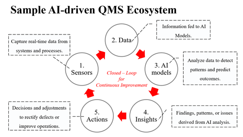
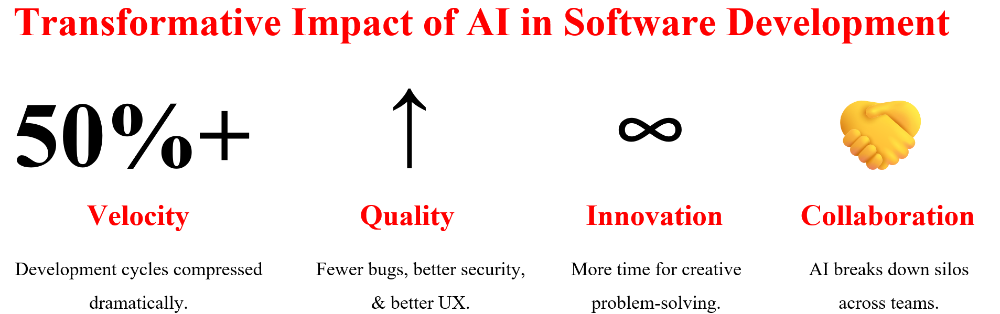
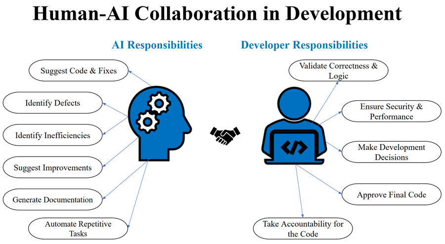
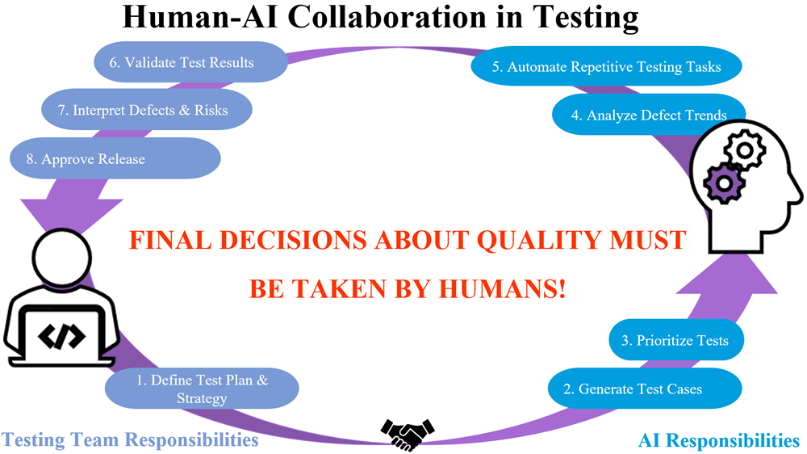
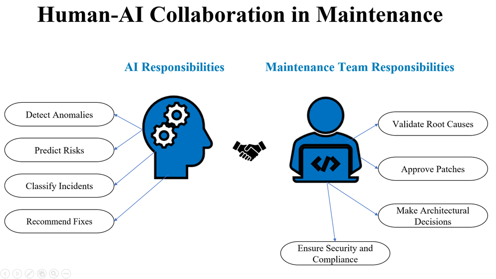

INLAC WORLD CONFERENCE 2026
Keynote address with blueprints to integrate Artificial Intelligence in Quality Assurance and Quality Management practices.

Software Engineering is a specialized branch of Computer Science that prioritizes a systematic approach to design, develop, test, and deploy software systems & products. For many years, the core principles of the Software Development Lifecycle (SDLC) have served as an invaluable guide for software development. However, in today's fast-paced and agile-driven world, where we constantly deal with massive data volumes, complex systems, and continuous release of system increments, it is a necessity that the SDLC evolve to meet these changing requirements.
Artificial Intelligence (AI) is transforming each industry by detecting inherent patterns, automating repetitive tasks, amplifying decision-making, and providing swift predictions. These provisions of AI are used differently across various industries. In this course AI-DRIVEN SOFTWARE DEVELOPMENT, we have explained the advantages of integrating AI across each distinct stage of the SDLC. AI can automate repetitive tasks and procedures, allowing developers to dedicate time towards more productive tasks. At the same time, we have not neglected the importance of human judgment. We have made a sincere effort to continuously highlight the fact that AI must not replace human decision-making.
The course follows the following template for each distinct phase of the Software Development Lifecycle (SDLC):-

THE ABOVE DIAGRAM EXPLICITLY HIGHLIGHTS THE RESPONSIBILITIES OF THOSE DEVELOPERS WHO USE AI TOOLS IN THE DEVELOPMENT PHASE. FURTHER, IT ALSO SPECIFIES SOME USE CASES OF AI IN DEVELOPMENT.

THE ABOVE DIAGRAM OFFERS A SCHEMATIC REPRESENTATION FOR INTEGRATING AI TOOLS IN THE TESTING PHASE. FURTHER, IT HIGHLIGHTS THE RESPONSIBILITIES OF THE TESTING TEAM AND PROVIDES AN INSIGHT ABOUT AI PROVISIONS THAT CAN BE UTILIZED IN THE TESTING PHASE.

THE ABOVE DIAGRAM DEPICTS SOME USE CASES OF AI IN THE MAINTENANCE PHASE. FURTHER, IT HIGHLIGHTS THE RESPONSIBILITIES OF THE MAINTENANCE TEAM.
BY HIGHLIGHTING AND REAFFIRMING THE RESPONSIBILITIES OF HUMANS ACROSS EACH DISTINCT PHASE OF THE SDLC, WE CONVEY THAT THE ULTIMATE DECISION-MAKING RESIDES WITH US. AI CAN BE USED AS AN AMPLIFIER BUT MUST NEVER REPLACE OUR JUDGMENT IN ANY GIVEN SCENARIO.